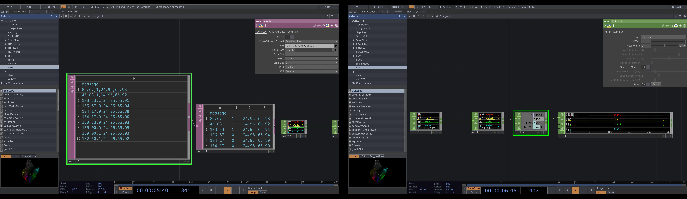
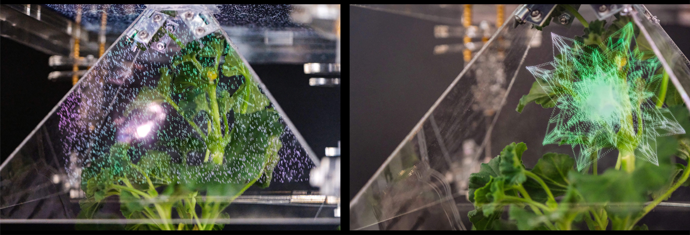

Synesthetic Garden
Installation Art

Installation Art
UAL Summer show

REFRACT explores the moment of impact between systems — where art meets technology, where human intention intersects with machine logic, and where code encounters the physical world. The exhibition takes refraction not only as an optical phenomenon, but as a metaphor for transformation: when information passes through a medium, it bends, shifts, and emerges altered.
Rather than presenting technology as a neutral tool, REFRACT positions it as an active surface of translation. Signals become images, data becomes gesture, and algorithmic processes materialise as spatial experiences. In this space, human perception and computational structures continuously interfere with one another, producing outcomes that are neither fully controlled nor entirely predictable.
The entire UAL Summer Show was organised collaboratively by a small team of students and tutors. Sponsorship coordination, media promotion, on-site planning, and the overall poster visuals were all developed as a team effort. Within the project, I was primarily responsible for the exhibition’s visual content and creative direction.
通过团队合作的形式，与xxx的Arduino部分数据进行通讯。 实时传感器数据获取到TD中进行效果展示。


